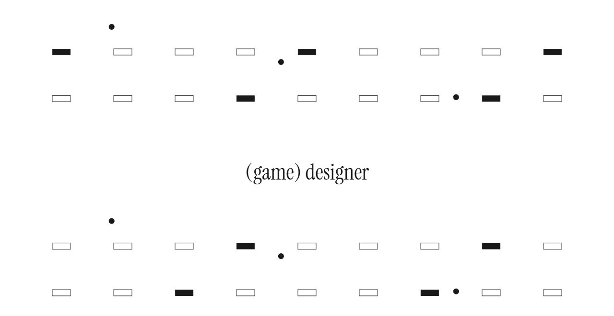
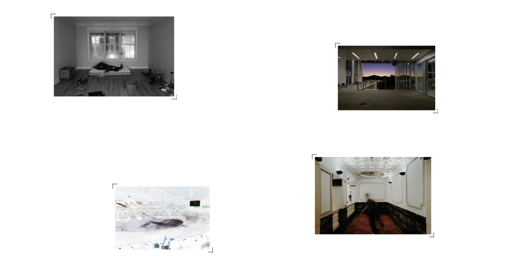
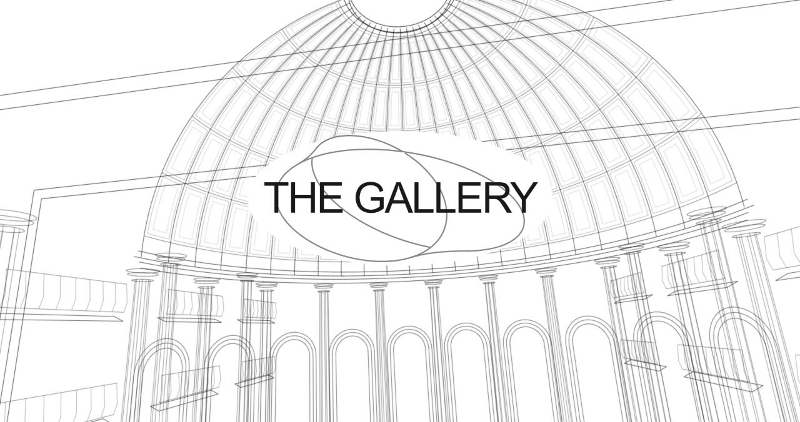
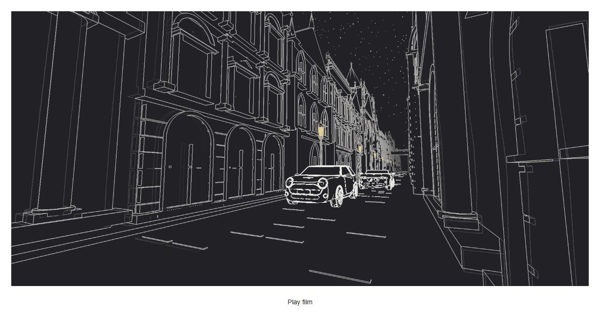
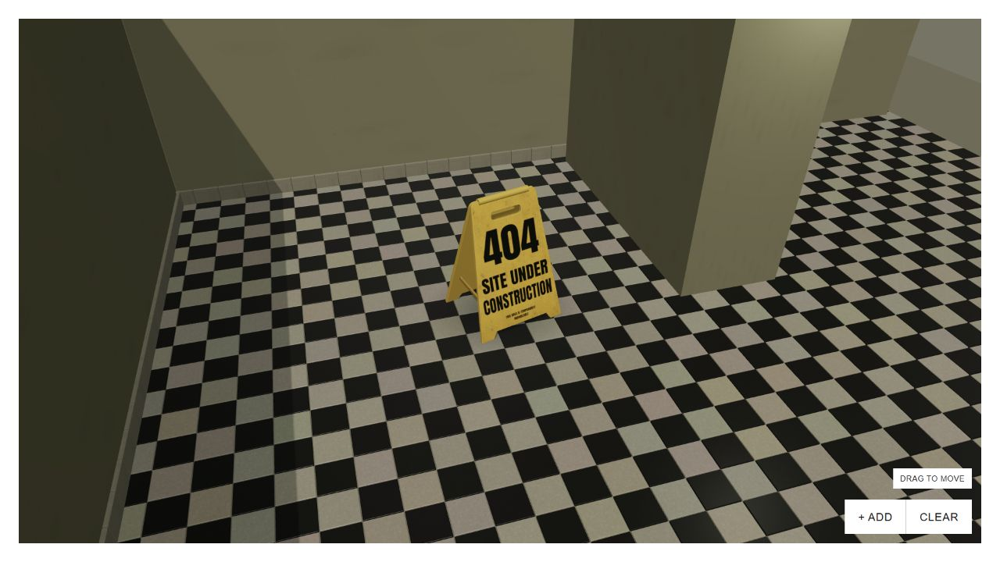
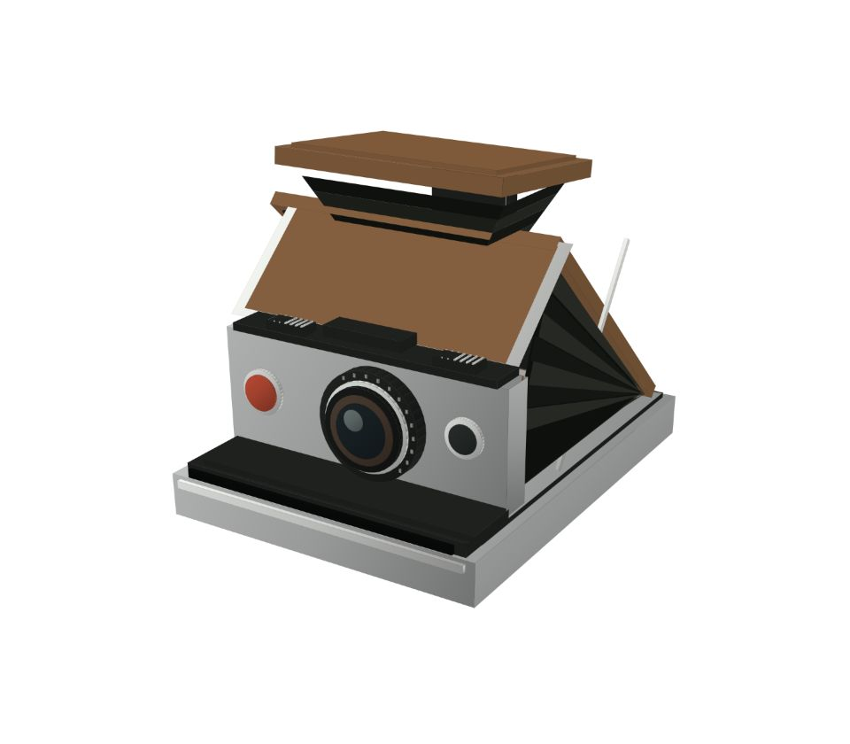

Figures of Speech
Studies in Motion & Interface Design
An evolving index of objects, interactions,
and the ideas behind this website.
FIG. 001Object / Material
Personal Card
Homepage / Smart Chen
View study
FIG. 002Interaction / Motion

Game Designer
Homepage / (game) designer
View study
FIG. 004Interaction / Hover

Filmmaker
Homepage / filmmaker
View study
FIG. 005Motion / Transition

Into The Gallery
Homepage + Projects → The Gallery
View study
FIG. 006Motion / Film

Car Enthusiast
Homepage / car enthusiast
View study
FIG. 007Interface / Playground

Under Construction
404 / Unavailable pages
View study
FIG. 008Object / Cursor

Polaroid Camera
Polaroid of Yesterday / Game Design Document
View study
Selected moments in the development of VegShark.com. Dates follow the source archive.
- FIG. 008Polaroid CameraThe Polaroid cursor is introduced.
- FIG. 008Polaroid CameraThe camera model and interaction details are refined.
- FIG. 002Game DesignerThe interactive field and its converging entrance are recorded together.
- FIG. 004FilmmakerPhotography is part of the recorded interactive homepage.
- FIG. 001Personal CardThe contact card becomes part of the homepage.
- FIG. 001Personal CardCircular graining becomes part of the metal finish.
- FIG. 001Personal CardDevice tilt joins the same material response.
- FIG. 007Under ConstructionThe construction-site 404 page is introduced.
- FIG. 007Under ConstructionScroll rotation direction is refined.
- FIG. 001Personal CardA downloadable résumé joins the contact links.
- FIG. 005Into The GalleryThe architectural museum entrance is introduced.
- FIG. 005Into The GalleryThe handoff into the real Gallery is refined.
- FIG. 004FilmmakerThe written identity changes from photographer to filmmaker.
- FIG. 005Into The GalleryThe same entrance is shared with project navigation.
- FIG. 006Car EnthusiastThe MINI and Z4 line-art race is introduced.
- FIG. 006Car EnthusiastHover preview and full playback become separate states.
- FIG. 006Car EnthusiastThe street preview becomes endless; the film gains a full vertical loop.
- FIG. 006Car EnthusiastA lower second-shot camera is tried.
- FIG. 006Car EnthusiastThe previous second-shot height is restored.